library(corehydror)
# Earth-tone palette used throughout
olive <- "#6b7f3f"
clay <- "#b06a3b"
slate <- "#5b7a8c"
gray <- "#8c8c7a"
cat("Setup complete\n")Setup completeLanguage: R (Quarto) - Python version
Ported from 01_distributions.ipynb in the USACE-RMC Numerics-Python-Examples repository (0BSD licensed). The upstream notebook drives the C# Numerics.dll through pythonnet; this version uses corehydror, whose compiled core is a validated C++ port of the same library, so the numbers below reproduce the upstream outputs exactly. The Python version of this example uses the same core and prints the same numbers.
The upstream notebook tours ten of the 43 univariate families in the library: Normal, Log-Normal, GEV, Gamma, Weibull, Uniform, Triangular, PERT, Poisson, and Binomial. This port keeps every family and condenses the long mathematical derivations; see the upstream notebook for the full detail.
The upstream setup loads the CoreCLR runtime and imports each distribution class from Numerics.Distributions. Here one library() call covers everything, and every family is constructed by name through distribution().
The Normal (Gaussian) distribution is the most widely used continuous distribution. It arises naturally from the Central Limit Theorem: the sum of many independent random variables tends toward a Normal distribution regardless of the underlying distributions. It is parameterized by its mean \(\mu\) and standard deviation \(\sigma\):
\[ f(x) = \frac{1}{\sigma\sqrt{2\pi}} \exp\!\left(-\frac{(x - \mu)^2}{2\sigma^2}\right), \quad -\infty < x < \infty \]
Note that the library reports Pearson (non-excess) kurtosis, which is 3.0 for a Normal distribution. The “excess kurtosis” convention is Pearson minus 3.
When to use: symmetric data, many natural phenomena, Central Limit Theorem applications.
Mean: 100 Standard Deviation: 15 Variance: 225 Skewness: 0 Kurtosis: 3 Minimum: -Inf Maximum: Inf 5th Percentile: 75.327195595727915 Median: 100 95th Percentile: 124.67280440427207 # Plot the PDF and CDF over the 0.1% to 99.9% quantile range.
# dist_pdf/dist_cdf/dist_quantile are all vectorized.
x <- seq(dist_quantile(normal, 0.001), dist_quantile(normal, 0.999),
length.out = 500)
plot(x, dist_pdf(normal, x), type = "l", col = olive, lwd = 2,
xlab = "x", ylab = "PDF", main = "Probability density function")
polygon(c(x, rev(x)), c(dist_pdf(normal, x), rep(0, length(x))),
col = adjustcolor(olive, alpha.f = 0.25), border = NA)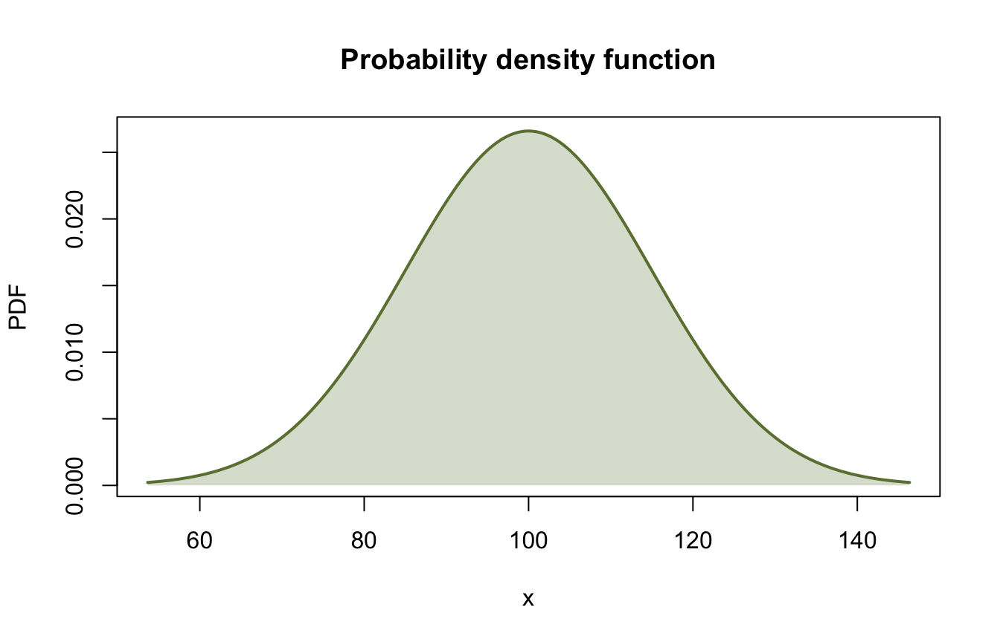
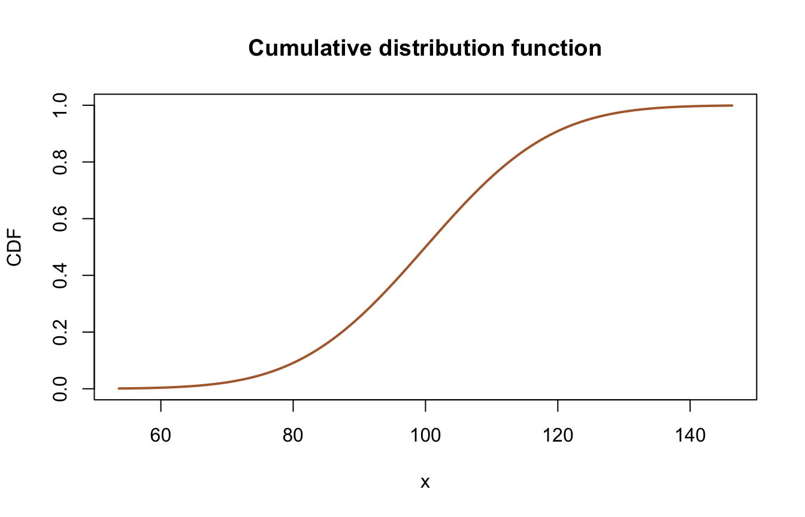
Two small helpers make the rest of the tour concise: one plots the PDF and CDF side by side, the other prints the statistics table the upstream notebook shows for each family.
plot_distribution <- function(dist, x_range = NULL, n_points = 500,
title = NULL) {
# Plot PDF and CDF of a distribution.
if (is.null(x_range)) {
x_range <- dist_quantile(dist, c(0.001, 0.999))
}
x <- seq(x_range[1], x_range[2], length.out = n_points)
op <- par(mfrow = c(1, 2))
plot(x, dist_pdf(dist, x), type = "l", col = olive, lwd = 2,
xlab = "x", ylab = "PDF", main = title)
polygon(c(x, rev(x)), c(dist_pdf(dist, x), rep(0, length(x))),
col = adjustcolor(olive, alpha.f = 0.25), border = NA)
plot(x, dist_cdf(dist, x), type = "l", col = clay, lwd = 2,
xlab = "x", ylab = "CDF")
par(op)
}
print_statistics <- function(dist, name = "Distribution") {
# Print the statistics table upstream shows for each family.
m <- dist_moments(dist)
q <- dist_quantile(dist, c(0.05, 0.5, 0.95))
df <- data.frame(
Statistic = c("Mean", "Std Deviation", "Variance", "Skewness",
"Kurtosis", "Minimum", "Maximum", "5th Percentile",
"Median", "95th Percentile"),
Value = round(c(m[["mean"]], m[["sd"]], m[["sd"]]^2, m[["skewness"]],
m[["kurtosis"]], m[["minimum"]], m[["maximum"]], q), 4)
)
cat("\n", name, " statistics:\n", sep = "")
print(df, row.names = FALSE)
}A parameterization note before the tour: the library uses its own parameter conventions (for example, GEV uses \(\xi\), \(\alpha\), \(\kappa\) in the Hosking convention). If you compare to textbooks or other R packages, double-check the parameter definitions. dist_params(d) shows the constructor order for any family.
A random variable \(X\) follows a Log-Normal distribution if \(\log(X)\) follows a Normal distribution. It suits strictly positive, right-skewed data arising from multiplicative processes. Matching the C# library, the "LogNormal" family uses base-10 logarithms: the parameters are the mean and standard deviation of \(\log_{10}(X)\). The upstream C# class has a mutable Base property; that is not exposed here. Use the "LnNormal" family when you want the base-\(e\) form.
When to use: right-skewed data that is always positive (flows, particle sizes, incomes).
LogNormal(4.0, 0.5) statistics:
Statistic Value
Mean 1.940096e+04
Std Deviation 3.225447e+04
Variance 1.040351e+09
Skewness 9.582700e+00
Kurtosis 3.468718e+02
Minimum 0.000000e+00
Maximum Inf
5th Percentile 1.505127e+03
Median 1.000000e+04
95th Percentile 6.643957e+04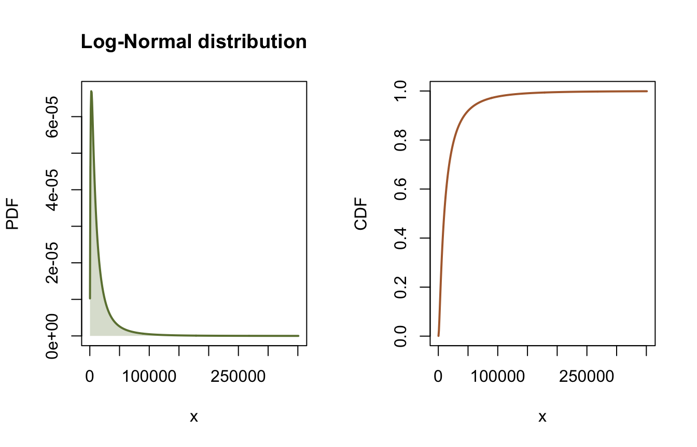
The GEV distribution unifies three classical extreme value distributions into a single three-parameter family. It is the limiting distribution for block maxima (annual maximum floods, peak wind speeds) under the Fisher-Tippett-Gnedenko theorem. The parameterization is location \(\xi\), scale \(\alpha > 0\), and shape \(\kappa\) in the Hosking convention, where the sign of \(\kappa\) follows L-moment theory:
\[ F(x) = \exp(-e^{-y}), \qquad y = \begin{cases} -\dfrac{1}{\kappa}\ln\!\left(1 - \kappa\dfrac{x - \xi}{\alpha}\right) & \kappa \neq 0 \\[6pt] \dfrac{x - \xi}{\alpha} & \kappa = 0 \end{cases} \]
The mean exists when \(|\kappa| < 1\) and the variance when \(|\kappa| < 1/2\), which is why two of the three tables below show NaN moments.
When to use: extreme events (floods, droughts, maxima and minima).
# Hosking convention: kappa < 0 => Frechet; kappa > 0 => Weibull type
gev_frechet <- distribution("GeneralizedExtremeValue", c(100, 15, -0.5))
gev_gumbel <- distribution("GeneralizedExtremeValue", c(100, 15, 0.0))
gev_weibull <- distribution("GeneralizedExtremeValue", c(100, 15, 0.5))
x <- seq(50, 200, length.out = 500)
plot(x, dist_pdf(gev_frechet, x), type = "l", col = olive, lwd = 2,
xlab = "x", ylab = "PDF", main = "GEV: effect of the shape parameter")
lines(x, dist_pdf(gev_gumbel, x), col = clay, lwd = 2)
lines(x, dist_pdf(gev_weibull, x), col = slate, lwd = 2)
legend("topright",
legend = c("kappa = -0.5 (Frechet)", "kappa = 0.0 (Gumbel)",
"kappa = 0.5 (Weibull)"),
col = c(olive, clay, slate), lwd = 2, bty = "n")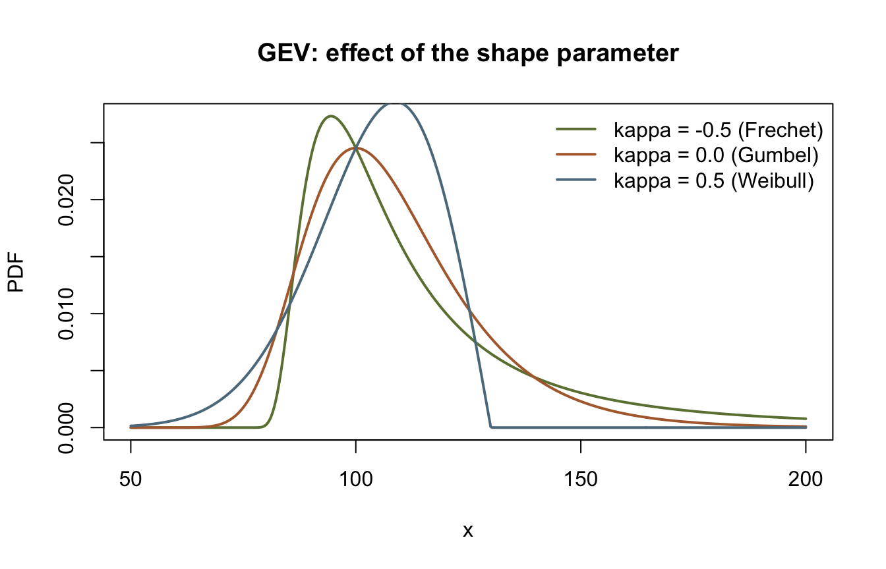
GEV (Frechet type) statistics:
Statistic Value
Mean 123.1736
Std Deviation NaN
Variance NaN
Skewness NaN
Kurtosis NaN
Minimum 70.0000
Maximum Inf
5th Percentile 87.3328
Median 106.0337
95th Percentile 202.4619
GEV (Gumbel type) statistics:
Statistic Value
Mean 108.6582
Std Deviation 19.2382
Variance 370.1102
Skewness 1.1396
Kurtosis 5.4000
Minimum -Inf
Maximum Inf
5th Percentile 83.5422
Median 105.4977
95th Percentile 144.5529
GEV (Weibull type) statistics:
Statistic Value
Mean 103.4132
Std Deviation NaN
Variance NaN
Skewness NaN
Kurtosis NaN
Minimum -Inf
Maximum 130.0000
5th Percentile 78.0754
Median 105.0234
95th Percentile 123.2056The Gamma distribution is a flexible two-parameter family for positive-valued data. It generalizes the Exponential distribution and appears in waiting-time problems, rainfall modeling, and Bayesian statistics. The factory name is "GammaDistribution" (matching the C# class name), with scale \(\theta\) first and shape \(\kappa\) second:
\[ f(x) = \frac{x^{\kappa-1}\, e^{-x/\theta}}{\theta^{\kappa}\,\Gamma(\kappa)}, \quad x > 0 \]
When to use: positive data, waiting times, rainfall amounts.
Gamma(scale=2, shape=0.5) statistics:
Statistic Value
Mean 1.0000
Std Deviation 1.4142
Variance 2.0000
Skewness 2.8284
Kurtosis 15.0000
Minimum 0.0000
Maximum Inf
5th Percentile 0.0039
Median 0.4549
95th Percentile 3.8415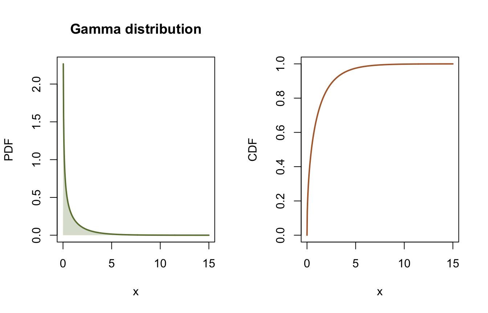
The Weibull distribution is a flexible two-parameter model for nonnegative data. Its shape parameter controls the failure rate: \(\kappa < 1\) gives decreasing hazard (early failures), \(\kappa = 1\) reduces to the Exponential distribution, and \(\kappa > 1\) yields increasing hazard (wear-out):
\[ F(x) = 1 - \exp\left[-\left(\frac{x}{\lambda}\right)^{\kappa}\right], \quad x \ge 0 \]
When to use: reliability analysis, wind speeds, failure times.
Weibull(scale=100, shape=2.5) statistics:
Statistic Value
Mean 88.7264
Std Deviation 37.9667
Variance 1441.4669
Skewness 0.3586
Kurtosis 2.8568
Minimum 0.0000
Maximum Inf
5th Percentile 30.4807
Median 86.3635
95th Percentile 155.0962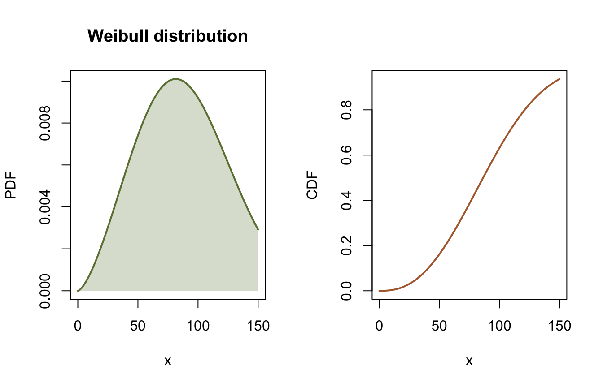
Three families for quantities with known bounds. The Uniform distribution assigns equal density to every value in \([a, b]\): maximum uncertainty given only the support. The Triangular distribution adds a most likely value (the mode) between the bounds, a common shape for expert elicitation. The PERT distribution (factory name "Pert") takes the same minimum, most likely, and maximum inputs but maps them to a smooth Beta density on \([a, b]\) with mean \((a + 4c + b)/6\), giving gentler tails than the Triangular.
When to use: bounded quantities; Uniform when only the range is known, Triangular or PERT when a most likely value is available (project estimates, expert opinion).
Uniform(0, 100) statistics:
Statistic Value
Mean 50.0000
Std Deviation 28.8675
Variance 833.3333
Skewness 0.0000
Kurtosis 1.8000
Minimum 0.0000
Maximum 100.0000
5th Percentile 5.0000
Median 50.0000
95th Percentile 95.0000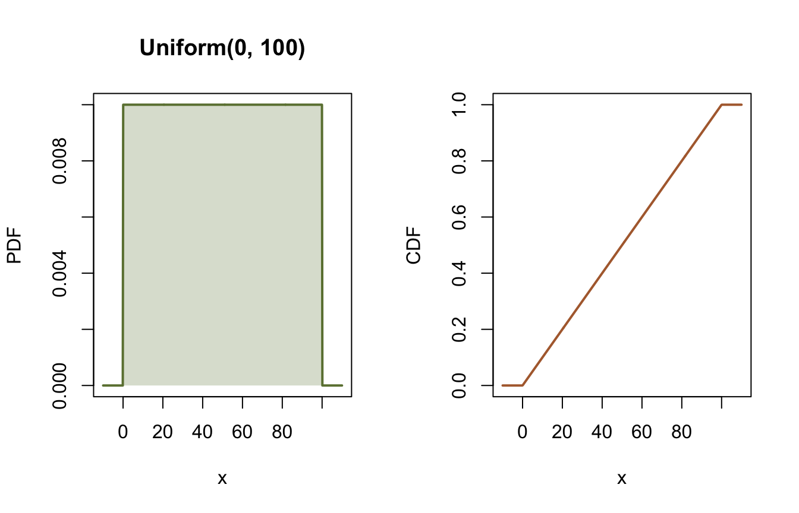
Triangular(0, 30, 100) statistics:
Statistic Value
Mean 43.3333
Std Deviation 20.9497
Variance 438.8889
Skewness 0.3561
Kurtosis 2.4000
Minimum 0.0000
Maximum 100.0000
5th Percentile 12.2474
Median 40.8392
95th Percentile 81.2917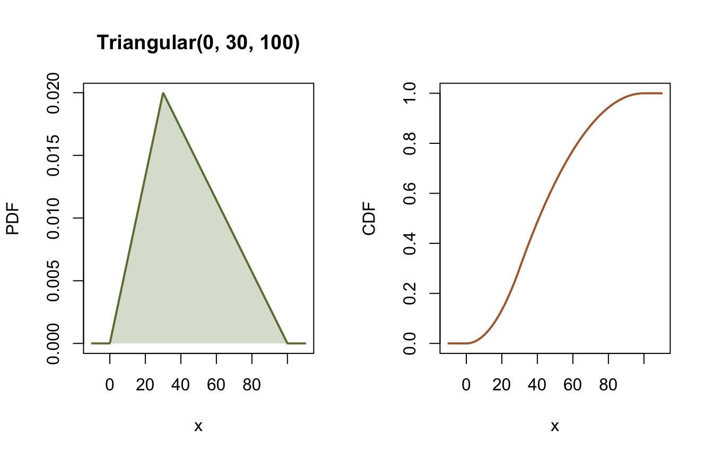
PERT(10, 50, 100) statistics:
Statistic Value
Mean 51.6667
Std Deviation 16.9617
Variance 287.6984
Skewness 0.0983
Kurtosis 2.3462
Minimum 10.0000
Maximum 100.0000
5th Percentile 24.4643
Median 51.2732
95th Percentile 80.2234# Compare PERT vs Triangular with the same min / most likely / max
tri <- distribution("Triangular", c(10, 50, 100))
x <- seq(5, 105, length.out = 500)
plot(x, dist_pdf(pert, x), type = "l", col = olive, lwd = 2,
xlab = "x", ylab = "PDF", main = "PERT vs Triangular")
lines(x, dist_pdf(tri, x), col = clay, lwd = 2, lty = 2)
legend("topright", legend = c("PERT", "Triangular"),
col = c(olive, clay), lwd = 2, lty = c(1, 2), bty = "n")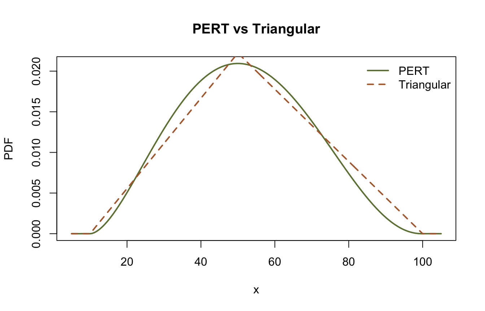
The library uses dist_pdf() for both continuous and discrete families; for discrete distributions, read dist_pdf() as the probability mass function (PMF).
The Poisson distribution models counts of events over a fixed interval when events occur independently at a constant average rate \(\lambda\):
\[ P(X=k) = \frac{\lambda^{k} e^{-\lambda}}{k!}, \quad k = 0, 1, 2, \ldots \]
Mean and variance are both \(\lambda\).
When to use: count data, events per time period, rare events.
Poisson(3.5) statistics:
Statistic Value
Mean 3.5000
Std Deviation 1.8708
Variance 3.5000
Skewness 0.5345
Kurtosis 3.2857
Minimum 0.0000
Maximum Inf
5th Percentile 1.0000
Median 3.0000
95th Percentile 7.0000k <- 0:14
op <- par(mfrow = c(1, 2))
barplot(dist_pdf(poisson, k), names.arg = k, col = olive, border = "white",
xlab = "k (count)", ylab = "PMF")
plot(k, dist_cdf(poisson, k), type = "s", col = clay, lwd = 2,
xlab = "k (count)", ylab = "CDF")
points(k, dist_cdf(poisson, k), col = clay, pch = 16, cex = 0.7)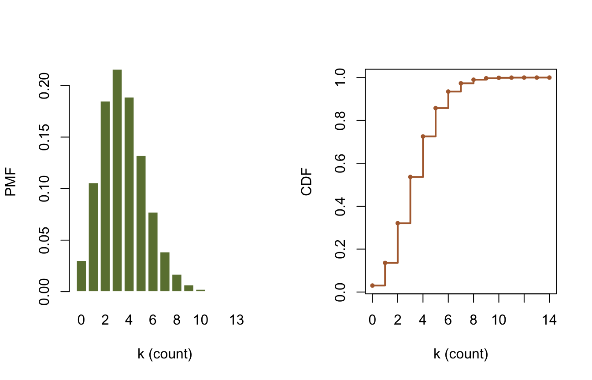
P(X = 3): 0.2158P(X <= 5): 0.8576The Binomial distribution models the number of successes in \(n\) independent Bernoulli trials with success probability \(p\):
\[ P(X=k) = \binom{n}{k} p^k (1-p)^{n-k}, \quad k = 0, 1, \ldots, n \]
The constructor order matches the C# class: probability first, then the number of trials.
When to use: fixed number of trials with binary outcomes.
Binomial(p=0.3, n=20) statistics:
Statistic Value
Mean 6.0000
Std Deviation 2.0494
Variance 4.2000
Skewness 0.1952
Kurtosis 2.9381
Minimum 0.0000
Maximum 20.0000
5th Percentile 3.0000
Median 6.0000
95th Percentile 9.0000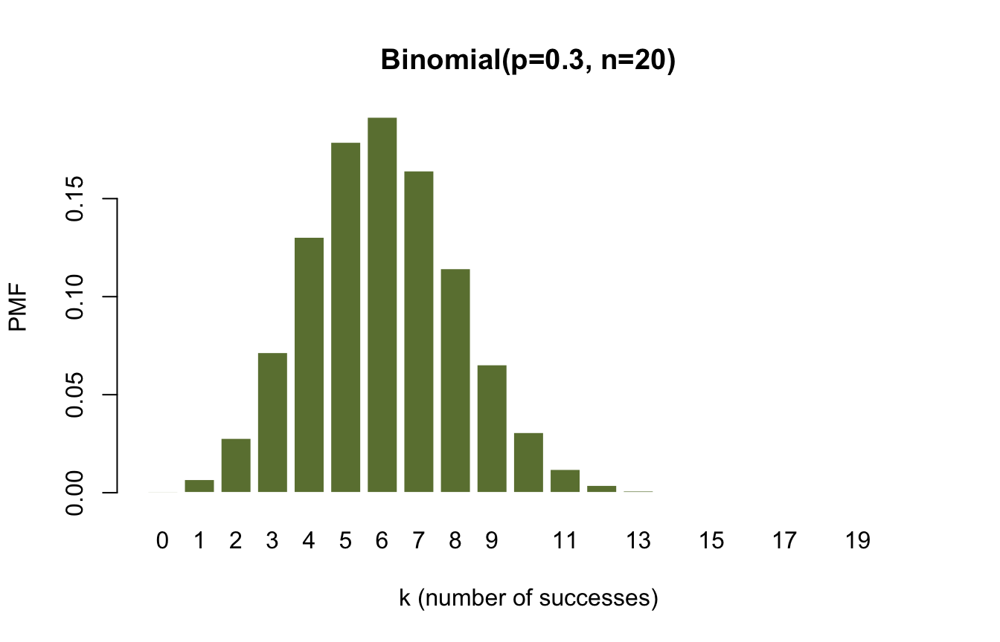
Expected value: 6.00Most likely value: 6Every univariate distribution has a dist_random() method (the port of GenerateRandomValues). The upstream notebook draws these samples unseeded; here they are seeded so the histograms and the table below reproduce exactly, in both languages. The sample statistics therefore differ from the upstream run’s unseeded table, but match the Python version of this page bit for bit.
n_samples <- 10000
normal_samples <- dist_random(distribution("Normal", c(100, 15)),
n_samples, seed = 42)
lognormal_samples <- dist_random(distribution("LogNormal", c(4, 0.5)),
n_samples, seed = 42)
gamma_samples <- dist_random(distribution("GammaDistribution", c(2, 0.5)),
n_samples, seed = 42)
op <- par(mfrow = c(1, 3))
hist(normal_samples, breaks = 50, freq = FALSE, col = olive, border = "white",
main = "Normal", xlab = "Value")
hist(lognormal_samples, breaks = 50, freq = FALSE, col = olive,
border = "white", main = "Log-Normal", xlab = "Value")
hist(gamma_samples, breaks = 50, freq = FALSE, col = olive, border = "white",
main = "Gamma", xlab = "Value")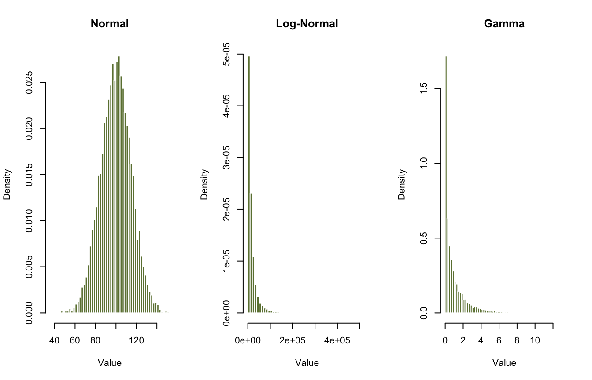
par(op)
sample_skew <- function(x) {
# Adjusted Fisher-Pearson sample skewness (same formula as the Python twin).
n <- length(x)
g1 <- mean((x - mean(x))^3) / mean((x - mean(x))^2)^1.5
g1 * sqrt(n * (n - 1)) / (n - 2)
}
stats_df <- data.frame(
Distribution = c("Normal", "Log-Normal", "Gamma"),
Sample.Mean = c(mean(normal_samples), mean(lognormal_samples),
mean(gamma_samples)),
Sample.Std = c(sd(normal_samples), sd(lognormal_samples),
sd(gamma_samples)),
Sample.Skew = c(sample_skew(normal_samples), sample_skew(lognormal_samples),
sample_skew(gamma_samples))
)
cat("\nSample statistics (seed=42):\n")
Sample statistics (seed=42): Distribution Sample.Mean Sample.Std Sample.Skew
Normal 9.990013e+01 14.994543 -0.04476462
Log-Normal 1.902829e+04 29289.105202 5.59911505
Gamma 9.875893e-01 1.382078 2.68244489Latin hypercube sampling (LHS) is a stratified sampling technique. Each dimension’s \([0, 1)\) range is divided into \(n\) equal strata and exactly one sample lands in each stratum:
\[ x_{ij} = \frac{\pi_j(i) + U_{ij}}{n}, \quad i = 0, \ldots, n-1 \]
where \(\pi_j\) is an independent random permutation for each dimension and \(U_{ij} \sim \text{Uniform}(0, 1)\). The median = TRUE variant replaces \(U_{ij}\) with 0.5, placing each point at its stratum center. Projected onto any single axis, the samples fall exactly one per stratum, which removes the clustering and gaps of simple random sampling. LHS often reaches the accuracy of plain Monte Carlo with 5 to 10 times fewer samples.
When to use: Monte Carlo with a limited budget, sensitivity analysis, calibration of expensive models, risk assessment.
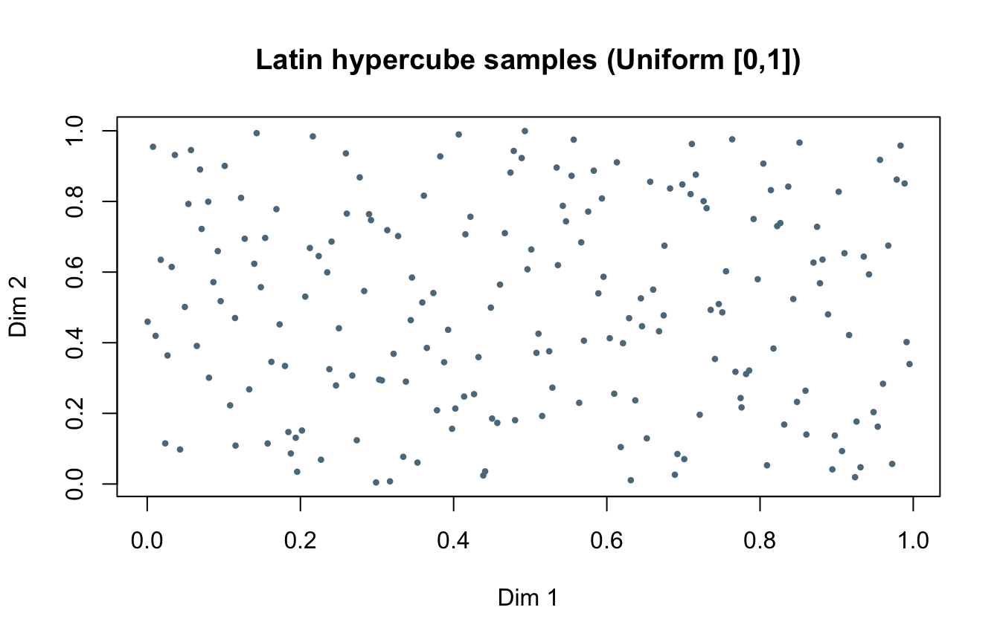
# The defining property: sorted samples in each dimension fall one per stratum.
n <- nrow(lhs)
stratified <- all(vapply(seq_len(ncol(lhs)), function(j) {
s <- sort(lhs[, j])
all(s >= (seq_len(n) - 1) / n & s < seq_len(n) / n)
}, logical(1)))
cat("One sample per stratum in every dimension:", stratified, "\n")One sample per stratum in every dimension: TRUE More than one distribution may fit a dataset well, so it pays to consider several candidates. Here we simulate 50 years of annual peak flows from a Log-Normal distribution (seeded, so the data reproduce exactly) and fit three candidates by maximum likelihood. Every family fits through dist_fit(); GEV also has a dedicated gev_fit() helper whose bespoke path carries quantile standard errors. Distribution fitting is covered properly in the next example.
# Simulate flood frequency data (seeded; upstream uses the same seed)
observed_data <- dist_random(distribution("LogNormal", c(8, 0.6)),
50, seed = 123)
lognormal_fit <- dist_fit("LogNormal", observed_data, method = "mle")
weibull_fit <- dist_fit("Weibull", observed_data, method = "mle")
gev_fitted <- dist_fit("GeneralizedExtremeValue", observed_data, method = "mle")
g <- dist_params(gev_fitted)
print(lognormal_fit)<corehydro_dist> LogNormal(µ = 8.01748, σ = 0.383659)Weibull fit: params = 162478206 1.0237 GEV fit: ξ α κ
8.061729e+07 6.246972e+07 -3.892413e-01 hist(observed_data, breaks = 20, freq = FALSE, col = gray, border = "white",
main = "Comparing distribution fits", xlab = "Annual peak flow",
ylab = "Density")
x <- seq(min(observed_data), max(observed_data), length.out = 500)
lines(x, dist_pdf(lognormal_fit, x), col = olive, lwd = 2)
lines(x, dist_pdf(gev_fitted, x), col = clay, lwd = 2)
lines(x, dist_pdf(weibull_fit, x), col = slate, lwd = 2)
legend("topright",
legend = c("Observed data", "Log-Normal", "GEV", "Weibull"),
col = c(gray, olive, clay, slate), lwd = c(8, 2, 2, 2), bty = "n")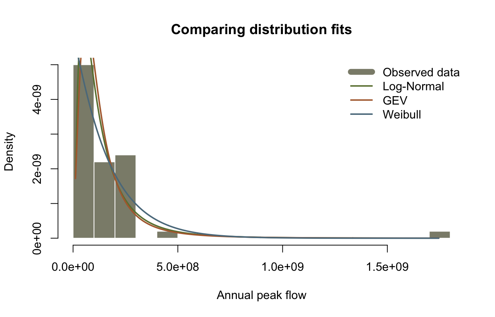
| Distribution | Type | Typical use case | Parameters |
|---|---|---|---|
| Normal | Continuous | Symmetric data, measurements | \(\mu\), \(\sigma\) |
| Log-Normal | Continuous | Right-skewed positive data | \(\mu\), \(\sigma\) |
| Uniform | Continuous | Equal probability over range | min, max |
| Triangular | Continuous | Bounded with mode | min, mode, max |
| PERT | Continuous | Project estimates | min, mode, max |
| Gamma | Continuous | Positive data, waiting times | \(\theta\), \(\kappa\) |
| Weibull | Continuous | Reliability, failure time | \(\lambda\), \(\kappa\) |
| Exponential | Continuous | Time between events | \(\lambda\) |
| Gumbel | Continuous | Extreme maxima | \(\xi\), \(\alpha\) |
| GEV | Continuous | General extreme values | \(\xi\), \(\alpha\), \(\kappa\) |
| Beta | Continuous | Proportions on [0,1] | \(\alpha\), \(\beta\) |
| Poisson | Discrete | Count data, rare events | \(\lambda\) |
| Binomial | Discrete | Binary outcomes, trials | \(n\), \(p\) |
| Bernoulli | Discrete | Single trial success/failure | \(p\) |
You have now explored:
Try creating and plotting these distributions on your own (use dist_params(d) to check the constructor order):
distribution("Beta", c(2, 5)) - useful for probabilities and proportions.distribution("StudentT", ...) with 3 degrees of freedom - a heavy-tailed alternative to the Normal.distribution("ChiSquared", c(5)) - goodness-of-fit testing.Values printed by the upstream notebook (run against the real C# library), compared with this port. Everything here is deterministic, so the match is exact; most upstream tables print 4 decimal places (or 7 significant figures for the Log-Normal), so those rows are compared at the precision upstream shows. The seeded draws, the Latin hypercube design, and the fitted parameters are additionally asserted bit-identical to the Python version of this page.
| Quantity | Upstream C# | This port | Status |
|---|---|---|---|
Normal(100,15).InverseCDF(0.05) |
75.32719559572791 | dist_quantile(normal, 0.05) |
exact |
Normal(100,15).InverseCDF(0.95) |
124.67280440427207 | dist_quantile(normal, 0.95) |
exact |
LogNormal(4,0.5).Mean |
1.940096e+04 | dist_moments()[["mean"]] |
exact (7 sig figs shown) |
LogNormal(4,0.5).Kurtosis |
346.8718 | dist_moments()[["kurtosis"]] |
exact (4 dp shown) |
LogNormal(4,0.5).InverseCDF(0.95) |
6.643957e+04 | dist_quantile(., 0.95) |
exact (7 sig figs shown) |
| GEV(100,15,-0.5) mean / min | 123.1736 / 70.0 | dist_moments() |
exact (4 dp shown) |
| GEV(100,15,0) mean / sd | 108.6582 / 19.2382 | dist_moments() |
exact (4 dp shown) |
| GEV(100,15,0.5) mean / max | 103.4132 / 130.0 | dist_moments() |
exact (4 dp shown) |
| Gamma(2,0.5) mean / kurtosis | 1.0 / 15.0 | dist_moments() |
exact |
| Gamma(2,0.5).InverseCDF(0.95) | 3.8415 | dist_quantile(., 0.95) |
exact (4 dp shown) |
| Weibull(100,2.5) mean | 88.7264 | dist_moments()[["mean"]] |
exact (4 dp shown) |
| Uniform(0,100) sd / kurtosis | 28.8675 / 1.8 | dist_moments() |
exact |
| Triangular(0,30,100) mean / median | 43.3333 / 40.8392 | dist_moments(), dist_quantile() |
exact (4 dp shown) |
| PERT(10,50,100) mean / median | 51.6667 / 51.2732 | dist_moments(), dist_quantile() |
exact (4 dp shown) |
| Poisson(3.5) P(X=3) / P(X<=5) | 0.2158 / 0.8576 | dist_pdf(., 3), dist_cdf(., 5) |
exact (4 dp shown) |
| Binomial(0.3,20) mean / 95th pct | 6.0 / 9.0 | dist_moments(), dist_quantile() |
exact |
First draw, LogNormal(8,0.6) seed 123 |
(not printed upstream) | bit-identical to Python twin | exact |
| LHS(200, 2, seed 12345) first point | (not printed upstream) | bit-identical to Python twin | exact |
The chunk below fails the render if any value drifts. The final block asserts the cross-language guarantee: the seeded draws, the Latin hypercube design, and the fitted Log-Normal parameters are the exact values the Python notebook prints.
# Upstream reference values: 01_distributions.ipynb, cells 4, 8, 10, 12, 14,
# 16, 18, 20, 22, 24 outputs. Upstream tables print DataFrame.round(4), so
# 4-decimal literals are compared at that precision; the underlying math is
# deterministic.
shown <- function(x, literal, tol = 5e-5) abs(x - literal) < tol
# Long-decimal literals are compared with a 1e-15 relative tolerance only
# because R's decimal parser can land one ulp away from the written literal.
rel <- function(x, literal, tol = 1e-15) abs(x / literal - 1) < tol
# Normal(100, 15) -- full-precision prints upstream
stopifnot(
rel(dist_quantile(normal, 0.05), 75.32719559572791),
dist_quantile(normal, 0.5) == 100.0,
rel(dist_quantile(normal, 0.95), 124.67280440427207)
)
# LogNormal(4, 0.5) -- shown to 7 significant figures upstream
ln_m <- dist_moments(lognormal)
stopifnot(
rel(ln_m[["mean"]], 1.940096e4, tol = 1e-6),
rel(ln_m[["sd"]], 3.225447e4, tol = 1e-6),
shown(ln_m[["skewness"]], 9.5827),
shown(ln_m[["kurtosis"]], 346.8718),
rel(dist_quantile(lognormal, 0.05), 1.505127e3, tol = 1e-6),
rel(dist_quantile(lognormal, 0.95), 6.643957e4, tol = 1e-6)
)
# GEV shapes
fm <- dist_moments(gev_frechet)
gm <- dist_moments(gev_gumbel)
wm <- dist_moments(gev_weibull)
stopifnot(
shown(fm[["mean"]], 123.1736), fm[["minimum"]] == 70.0,
shown(dist_quantile(gev_frechet, 0.95), 202.4619),
shown(gm[["mean"]], 108.6582), shown(gm[["sd"]], 19.2382),
shown(gm[["skewness"]], 1.1396), gm[["kurtosis"]] == 5.4,
shown(dist_quantile(gev_gumbel, 0.5), 105.4977),
shown(wm[["mean"]], 103.4132), wm[["maximum"]] == 130.0,
shown(dist_quantile(gev_weibull, 0.95), 123.2056)
)
# Gamma(2, 0.5)
gam_m <- dist_moments(gamma_dist)
stopifnot(
gam_m[["mean"]] == 1.0, gam_m[["kurtosis"]] == 15.0,
shown(gam_m[["sd"]], 1.4142), shown(gam_m[["skewness"]], 2.8284),
shown(dist_quantile(gamma_dist, 0.5), 0.4549),
shown(dist_quantile(gamma_dist, 0.95), 3.8415)
)
# Weibull(100, 2.5)
wb_m <- dist_moments(weibull)
stopifnot(
shown(wb_m[["mean"]], 88.7264), shown(wb_m[["sd"]], 37.9667),
shown(dist_quantile(weibull, 0.95), 155.0962)
)
# Uniform, Triangular, PERT
un_m <- dist_moments(uniform)
tr_m <- dist_moments(triangular)
pt_m <- dist_moments(pert)
stopifnot(
un_m[["mean"]] == 50.0, un_m[["kurtosis"]] == 1.8,
shown(un_m[["sd"]], 28.8675),
shown(tr_m[["mean"]], 43.3333), shown(tr_m[["skewness"]], 0.3561),
shown(dist_quantile(triangular, 0.5), 40.8392),
shown(dist_quantile(triangular, 0.95), 81.2917),
shown(pt_m[["mean"]], 51.6667), shown(pt_m[["sd"]], 16.9617),
shown(dist_quantile(pert, 0.5), 51.2732),
shown(dist_quantile(pert, 0.95), 80.2234)
)
# Poisson(3.5) and Binomial(0.3, 20)
po_m <- dist_moments(poisson)
bi_m <- dist_moments(binomial)
stopifnot(
po_m[["mean"]] == 3.5, shown(po_m[["sd"]], 1.8708),
shown(dist_pdf(poisson, 3), 0.2158),
shown(dist_cdf(poisson, 5), 0.8576),
dist_quantile(poisson, 0.95) == 7.0,
bi_m[["mean"]] == 6.0, shown(bi_m[["sd"]], 2.0494),
dist_quantile(binomial, 0.05) == 3.0,
dist_quantile(binomial, 0.95) == 9.0
)
# Seeded values, bit-identical across R, Python, and the C# library
stopifnot(
rel(normal_samples[1], 95.20221411105254),
rel(observed_data[1], 203499515.64666739),
rel(lhs[1, 1], 0.12249509909539484),
rel(lhs[1, 2], 0.81019698383868677),
stratified
)
# Log-Normal MLE is deterministic (closed-form in log space); the tolerance
# only guards platform libm differences.
ln_params <- dist_params(lognormal_fit)
stopifnot(
rel(ln_params[[1]], 8.0174794125819, tol = 1e-12),
rel(ln_params[[2]], 0.383659272555292, tol = 1e-12)
)
cat("All reproduction checks passed.\n")All reproduction checks passed.